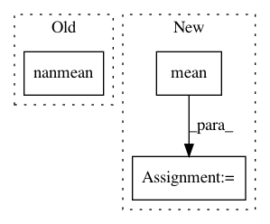

134db0b8216e32dd6d91a57f7d18409a6028720f,linearmodels/tests/panel/test_between_ols.py,,test_missing,#Any#,93
Before Change
mod = BetweenOLS(missing_data.y, missing_data.x)
res = mod.fit(reweight=True)
dep = np.nanmean(mod.dependent.values3d, axis=1).T
exog = pd.DataFrame(np.nanmean(mod.exog.values3d, axis=1).T,
columns=mod.exog.vars)
weights = np.nansum(mod.weights.values3d, axis=1).T
After Change
mod = BetweenOLS(missing_data.y, missing_data.x)
res = mod.fit(reweight=True)
dep = mod.dependent.dataframe.groupby(level=0).mean()
exog = mod.exog.dataframe.groupby(level=0).mean()
weights = mod.weights.dataframe.groupby(level=0).sum()
dep = dep.reindex(mod.dependent.entities)
exog = exog .reindex(mod.dependent.entities)
weights = weights.reindex(mod.dependent.entities)
ols = IV2SLS(dep, exog, None, None, weights=weights)
In pattern: SUPERPATTERN
Frequency: 3
Non-data size: 3
Instances
Project Name: bashtage/linearmodels
Commit Name: 134db0b8216e32dd6d91a57f7d18409a6028720f
Time: 2017-04-04
Author: kevin.k.sheppard@gmail.com
File Name: linearmodels/tests/panel/test_between_ols.py
Class Name:
Method Name: test_missing
Project Name: analysiscenter/batchflow
Commit Name: 327235adabdcdff566ff74413795091353dcfc1f
Time: 2019-10-16
Author: 53620809+cdtn@users.noreply.github.com
File Name: batchflow/models/metrics/utils.py
Class Name:
Method Name: infmean
Project Name: bashtage/linearmodels
Commit Name: f49809322491c857d435bb12f5de7b09aac2d181
Time: 2017-04-14
Author: kevin.k.sheppard@gmail.com
File Name: linearmodels/panel/data.py
Class Name: PanelData
Method Name: mean